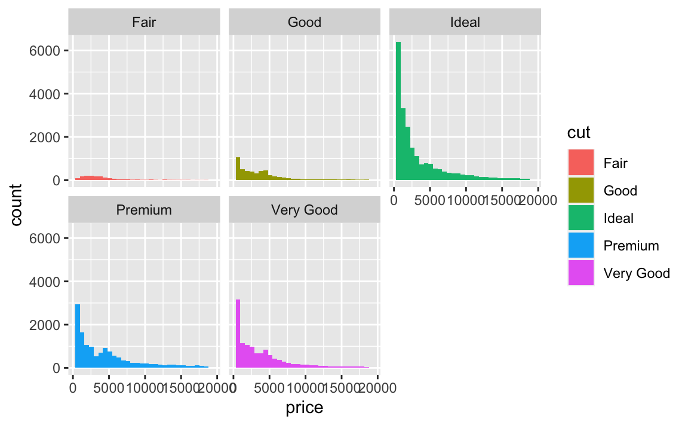
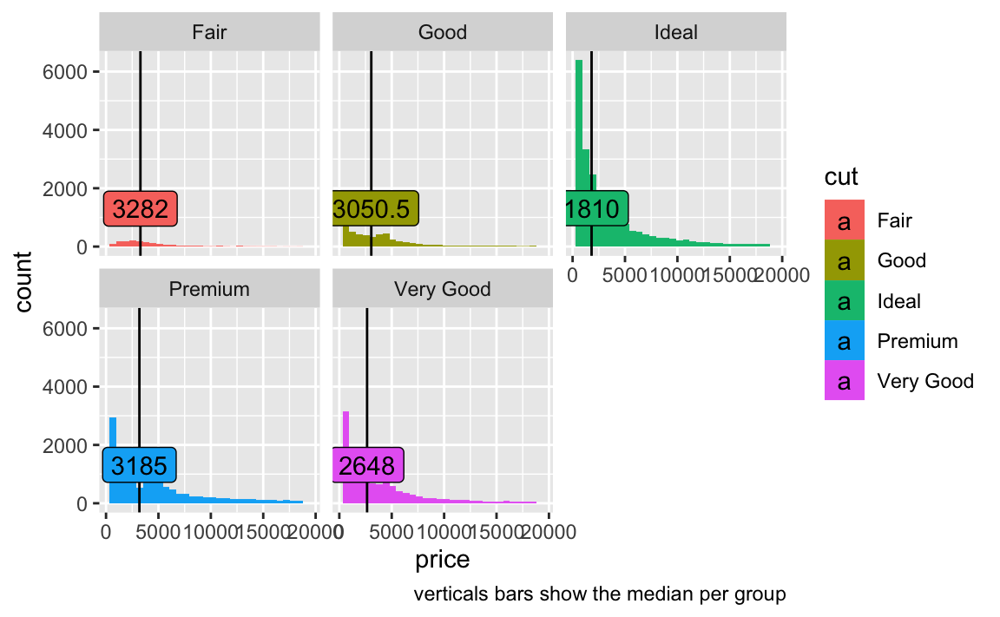

library(tidyverse) # data wranglingVisualise the distribution of the price, grouped by cut. Add the mean and/or the median to the picture for each subgroup.
data_url <- "https://vincentarelbundock.github.io/Rdatasets/csv/ggplot2/diamonds.csv"diamonds <- read_csv(data_url)plot1 <- diamonds %>%
ggplot() +
aes(x = price) +
geom_histogram() +
facet_wrap(~ cut)
plot1
Summarized data:
diamonds %>%
group_by(cut) %>%
summarise(price_md_cut = median(price, na.rm = T),
price_max_cut = max(price, na.rm = T)) -> diamonds_summarized
knitr::kable(diamonds_summarized)| cut | price_md_cut | price_max_cut |
|---|---|---|
| Fair | 3282.0 | 18574 |
| Good | 3050.5 | 18788 |
| Ideal | 1810.0 | 18806 |
| Premium | 3185.0 | 18823 |
| Very Good | 2648.0 | 18818 |
plot1 +
geom_vline(data = diamonds_summarized, aes(xintercept = price_md_cut)) +
geom_label(data = diamonds_summarized, aes(x = price_md_cut,
y = price_max_cut*0.07,
label = price_md_cut)) +
labs(caption = "verticals bars show the median per group")
#> ─ Session info ───────────────────────────────────────────────────────────────────────────────────────────────────────
#> setting value
#> version R version 4.0.2 (2020-06-22)
#> os macOS Catalina 10.15.7
#> system x86_64, darwin17.0
#> ui X11
#> language (EN)
#> collate en_US.UTF-8
#> ctype en_US.UTF-8
#> tz Europe/Berlin
#> date 2020-12-07
#>
#> ─ Packages ───────────────────────────────────────────────────────────────────────────────────────────────────────────
#> package * version date lib source
#> assertthat 0.2.1 2019-03-21 [1] CRAN (R 4.0.0)
#> backports 1.2.0 2020-11-02 [1] CRAN (R 4.0.2)
#> blogdown 0.21 2020-10-11 [1] CRAN (R 4.0.2)
#> bookdown 0.21 2020-10-13 [1] CRAN (R 4.0.2)
#> broom 0.7.2 2020-10-20 [1] CRAN (R 4.0.2)
#> callr 3.5.1 2020-10-13 [1] CRAN (R 4.0.2)
#> cellranger 1.1.0 2016-07-27 [1] CRAN (R 4.0.0)
#> cli 2.2.0 2020-11-20 [1] CRAN (R 4.0.2)
#> codetools 0.2-16 2018-12-24 [2] CRAN (R 4.0.2)
#> colorspace 2.0-0 2020-11-11 [1] CRAN (R 4.0.2)
#> crayon 1.3.4 2017-09-16 [1] CRAN (R 4.0.0)
#> DBI 1.1.0 2019-12-15 [1] CRAN (R 4.0.0)
#> dbplyr 2.0.0 2020-11-03 [1] CRAN (R 4.0.2)
#> desc 1.2.0 2018-05-01 [1] CRAN (R 4.0.0)
#> devtools 2.3.2 2020-09-18 [1] CRAN (R 4.0.2)
#> digest 0.6.27 2020-10-24 [1] CRAN (R 4.0.2)
#> dplyr * 1.0.2 2020-08-18 [1] CRAN (R 4.0.2)
#> ellipsis 0.3.1 2020-05-15 [1] CRAN (R 4.0.0)
#> evaluate 0.14 2019-05-28 [1] CRAN (R 4.0.0)
#> fansi 0.4.1 2020-01-08 [1] CRAN (R 4.0.0)
#> forcats * 0.5.0 2020-03-01 [1] CRAN (R 4.0.0)
#> fs 1.5.0 2020-07-31 [1] CRAN (R 4.0.2)
#> generics 0.1.0 2020-10-31 [1] CRAN (R 4.0.2)
#> ggplot2 * 3.3.2 2020-06-19 [1] CRAN (R 4.0.0)
#> glue 1.4.2 2020-08-27 [1] CRAN (R 4.0.2)
#> gtable 0.3.0 2019-03-25 [1] CRAN (R 4.0.0)
#> haven 2.3.1 2020-06-01 [1] CRAN (R 4.0.0)
#> hms 0.5.3 2020-01-08 [1] CRAN (R 4.0.0)
#> htmltools 0.5.0 2020-06-16 [1] CRAN (R 4.0.0)
#> httr 1.4.2 2020-07-20 [1] CRAN (R 4.0.2)
#> jsonlite 1.7.1 2020-09-07 [1] CRAN (R 4.0.2)
#> knitr 1.30 2020-09-22 [1] CRAN (R 4.0.2)
#> lifecycle 0.2.0 2020-03-06 [1] CRAN (R 4.0.0)
#> lubridate 1.7.9.2 2020-11-13 [1] CRAN (R 4.0.2)
#> magrittr 2.0.1 2020-11-17 [1] CRAN (R 4.0.2)
#> memoise 1.1.0 2017-04-21 [1] CRAN (R 4.0.0)
#> modelr 0.1.8 2020-05-19 [1] CRAN (R 4.0.0)
#> munsell 0.5.0 2018-06-12 [1] CRAN (R 4.0.0)
#> pillar 1.4.7 2020-11-20 [1] CRAN (R 4.0.2)
#> pkgbuild 1.1.0 2020-07-13 [1] CRAN (R 4.0.2)
#> pkgconfig 2.0.3 2019-09-22 [1] CRAN (R 4.0.0)
#> pkgload 1.1.0 2020-05-29 [1] CRAN (R 4.0.0)
#> prettyunits 1.1.1 2020-01-24 [1] CRAN (R 4.0.0)
#> processx 3.4.5 2020-11-30 [1] CRAN (R 4.0.2)
#> ps 1.4.0 2020-10-07 [1] CRAN (R 4.0.2)
#> purrr * 0.3.4 2020-04-17 [1] CRAN (R 4.0.0)
#> R6 2.5.0 2020-10-28 [1] CRAN (R 4.0.2)
#> Rcpp 1.0.5 2020-07-06 [1] CRAN (R 4.0.2)
#> readr * 1.4.0 2020-10-05 [1] CRAN (R 4.0.2)
#> readxl 1.3.1 2019-03-13 [1] CRAN (R 4.0.0)
#> remotes 2.2.0 2020-07-21 [1] CRAN (R 4.0.2)
#> reprex 0.3.0 2019-05-16 [1] CRAN (R 4.0.0)
#> rlang 0.4.9 2020-11-26 [1] CRAN (R 4.0.2)
#> rmarkdown 2.5 2020-10-21 [1] CRAN (R 4.0.2)
#> rprojroot 2.0.2 2020-11-15 [1] CRAN (R 4.0.2)
#> rstudioapi 0.13 2020-11-12 [1] CRAN (R 4.0.2)
#> rvest 0.3.6 2020-07-25 [1] CRAN (R 4.0.2)
#> scales 1.1.1 2020-05-11 [1] CRAN (R 4.0.0)
#> sessioninfo 1.1.1 2018-11-05 [1] CRAN (R 4.0.0)
#> stringi 1.5.3 2020-09-09 [1] CRAN (R 4.0.2)
#> stringr * 1.4.0 2019-02-10 [1] CRAN (R 4.0.0)
#> testthat 3.0.0 2020-10-31 [1] CRAN (R 4.0.2)
#> tibble * 3.0.4 2020-10-12 [1] CRAN (R 4.0.2)
#> tidyr * 1.1.2 2020-08-27 [1] CRAN (R 4.0.2)
#> tidyselect 1.1.0 2020-05-11 [1] CRAN (R 4.0.0)
#> tidyverse * 1.3.0 2019-11-21 [1] CRAN (R 4.0.0)
#> usethis 1.6.3 2020-09-17 [1] CRAN (R 4.0.2)
#> vctrs 0.3.5 2020-11-17 [1] CRAN (R 4.0.2)
#> withr 2.3.0 2020-09-22 [1] CRAN (R 4.0.2)
#> xfun 0.19 2020-10-30 [1] CRAN (R 4.0.2)
#> xml2 1.3.2 2020-04-23 [1] CRAN (R 4.0.0)
#> yaml 2.2.1 2020-02-01 [1] CRAN (R 4.0.0)
#>
#> [1] /Users/sebastiansaueruser/Rlibs
#> [2] /Library/Frameworks/R.framework/Versions/4.0/Resources/library